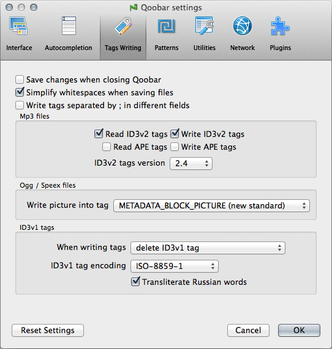

Tags writing

- Save changes when closing Qoobar - check this box to automatically save all unsaved files, both selected and not selected.
- Simplify whitespaces when saving files - if you find it tedious to manually remove extra spaces, tabs etc., check this item, and Qoobar will do it automatically. Qoobar also always skips Comments and Lyrics tags.
- Write tags separated by ; in different fields - This option works only for flac, ape, ogg, oga, spx files. If you check on this option, the string "some text;another text;some other text" will be written not as one field "ARTIST=some text;another text;some other text" but as three different fields "ARTIST=some text", "ARTIST=another text", "ARTIST=some other text".
- Mp3 files - there you can choose which tags to read and write.
- ID3v2 tags version - the default version of ID3v2 tags when saving.
- Ogg / Speex files - This setting allows you to choose the desirable format for the cover art tag - the old one (COVERART) or the new preferred one (METADATA_BLOCK_PICTURE).
- ID3v1 tags - there you can choose how to duplicate ID3v2 tags into ID3v1 - either delete ID3v1 tags completely, only update existing ID3v1 tags or always create ID3v1 tags.
- Transliterate Russian words - if you set this option, all
Cyrillic letters in ID3v1 tags will be replaced according to this scheme:
а ⇒ a р ⇨ r б ⇒ b с ⇒ s в ⇒ v т ⇒ t г ⇒ g у ⇒ u д ⇒ d ф ⇒ f е, ё ⇒ e х ⇒ kh ж ⇒ zh ц ⇒ c з ⇒ z ч ⇒ ch и ⇒ i ш ⇒ sh й ⇒ j щ ⇒ x к ⇒ k ъ ⇒ w л ⇒ l ы ⇒ y м ⇒ m ь ⇒ j н ⇒ n э ⇒ eh о ⇒ o ю ⇒ yu п ⇒ p я ⇒ ya
© 2009-2015 Alex Novichkov